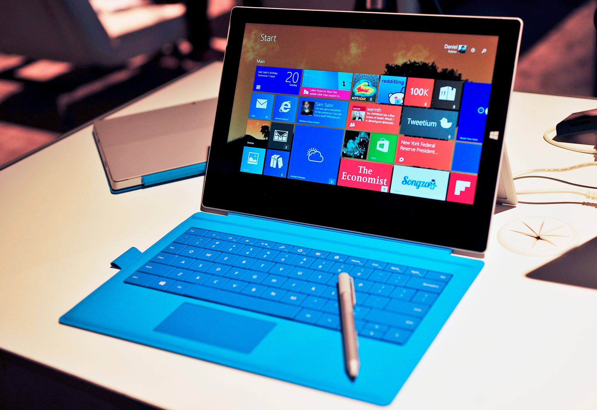
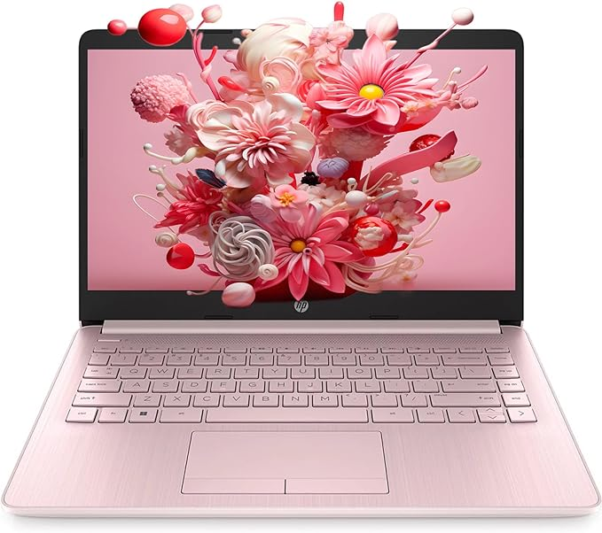
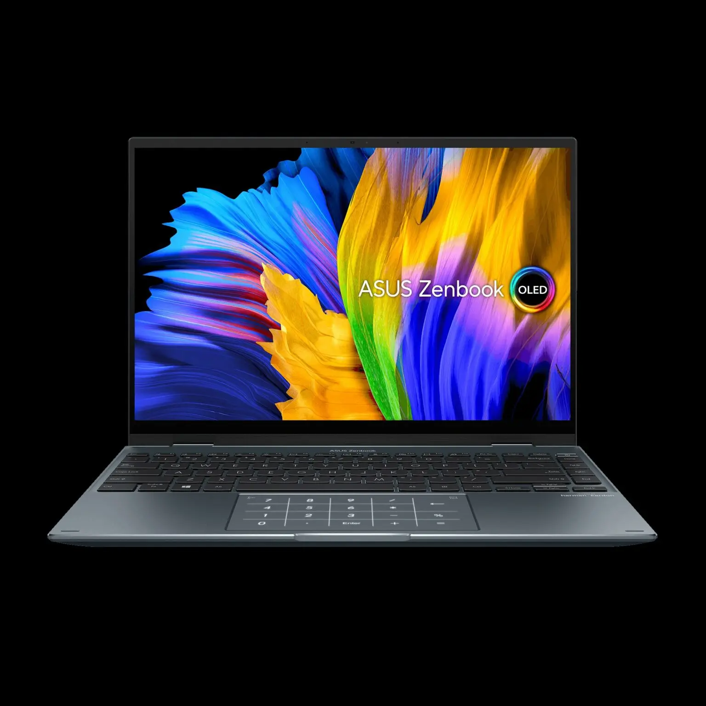

Mac Laptops are King!
Mac is the best laptop, hands down, here's why:
Mac offers hugher security, superior quality and performance, along with an amazing integrated ecosystem.
The Top 3 best Mac Laptops!
- Most Affordable: Used Apple MacBook Pro 13-inch
- Best Deal: Used Apple MacBook Pro M1 Chip 13.3"
- Best Quality: Used Apple Macbook Air M2 Chip
Get more bang for your buck!
Top 3 Best Windows Laptops
These are the best 3 Windows laptop based upon quality,usefulness,and design.
- Surface Laptop Go 3

- HP Spectre x360 14

- Asus Zenbook 14X OLED

Does not overheat and is more affordable than a Mac!